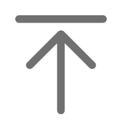

<!--底部-->
<p class="text-center bg-dark py-3 text-light m-0">版权所有</p>

<!--顶部-右侧导航-->
<ul class="list-group col-00" id="top_nav">
	<li class="list-group-item mx-auto  back_to_top"></li>
	<li class="list-group-item mx-auto" data-target="#fankui" data-toggle="modal"></li>
	<li class="list-group-item mx-auto">
		<a href="tencent://message/?uin=1225835221&Menu=yes">
			
		</a>
	</li>
	<li class="list-group-item mx-auto" data-target="#weixin" data-toggle="modal"></li>
</ul>
<!--反馈-->
<div class="modal" id="fankui">
	<div class="modal-dialog">
		<div class="modal-content">
			<div class="modal-header">
				反馈
				<span class="close" data-dismiss="modal" data-target="#fankui">&times</span>
			</div>
			<div class="modal-body text-center">
				<textarea class="w-75" rows="10"></textarea>
			</div>
			<div class="modal-footer justify-content-center">
				<button class="btn btn-success" data-dismiss="modal" data-target="#fankui" onclick="alert('已提交给博客主')">提交</button>
				<button class="btn btn-danger" data-dismiss="modal" data-target="#fankui">取消</button>
			</div>
		</div>
	</div>
</div>
<!--微信-->
<div class="modal" id="weixin">
	<div class="modal-dialog">
		<div class="modal-content">
			<div class="modal-header">
				微信
				<span class="close" data-dismiss="modal" data-target="#weixin">&times;</span>
			</div>
			<div class="modal-body text-center">
				
			</div>
		</div>
	</div>
</div>

<!--顶部-->
<script>
	var backButton=$('.back_to_top');
	function backToTop() {
		$('html,body').animate({
			scrollTop: 0
		}, 800);
	}
	backButton.on('click', backToTop);

	$(window).on('scroll', function () {/*当滚动条的垂直位置大于浏览器所能看到的页面的那部分的高度时，回到顶部按钮就显示 */
		if ($(window).scrollTop() > $(window).height())
			backButton.fadeIn();
		else
			backButton.fadeOut();
	});
	$(window).trigger('scroll');/*触发滚动事件，避免刷新的时候显示回到顶部按钮*/
</script>